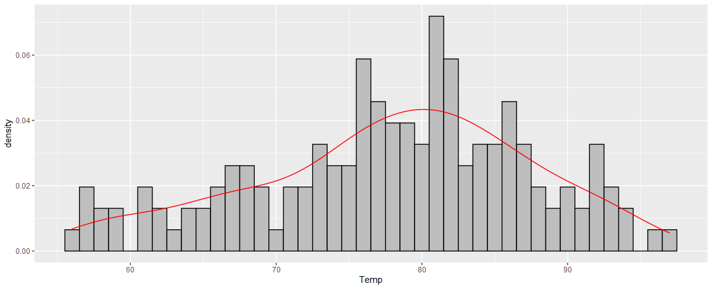
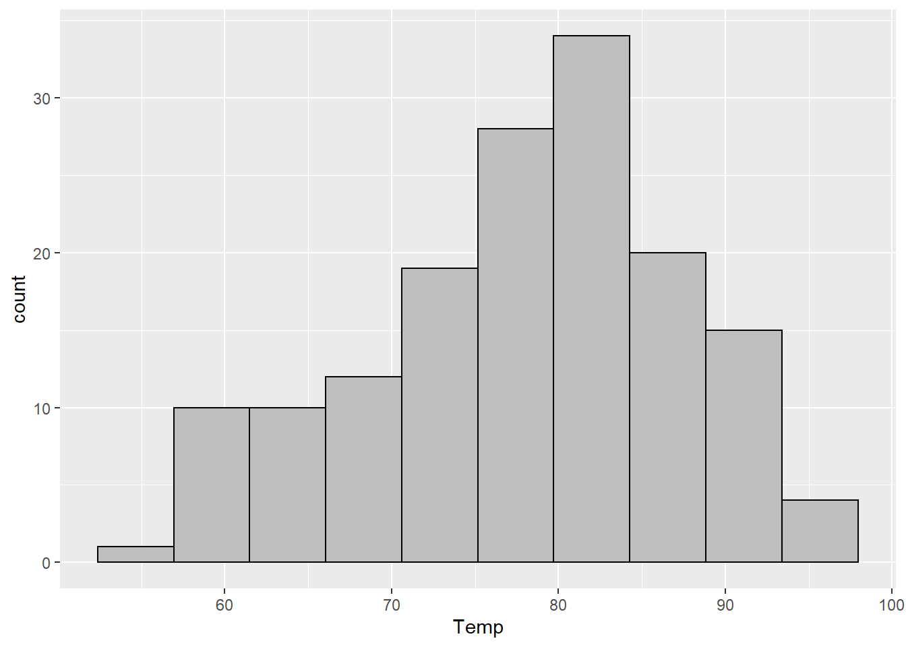
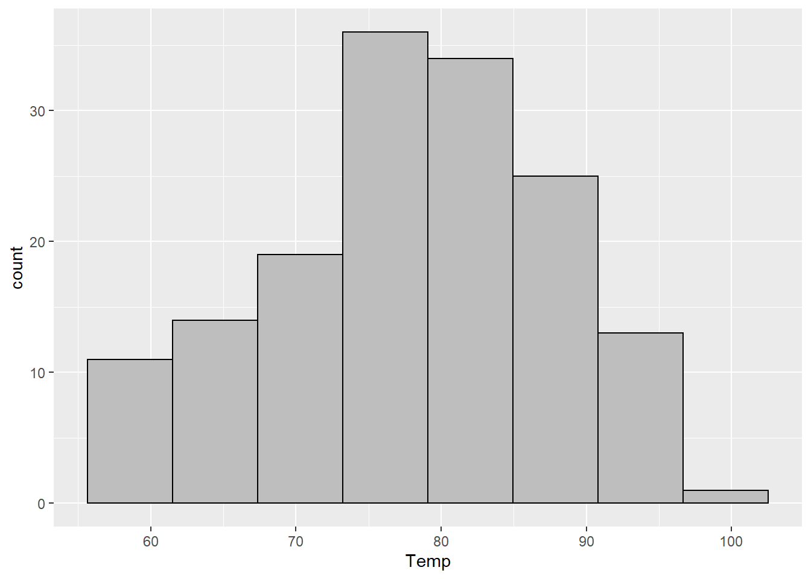
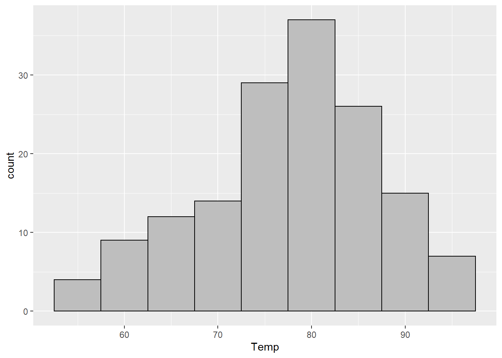
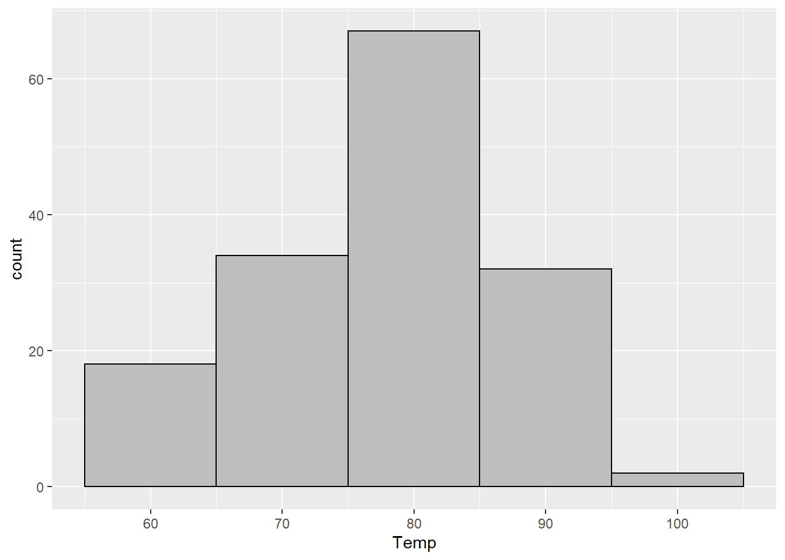
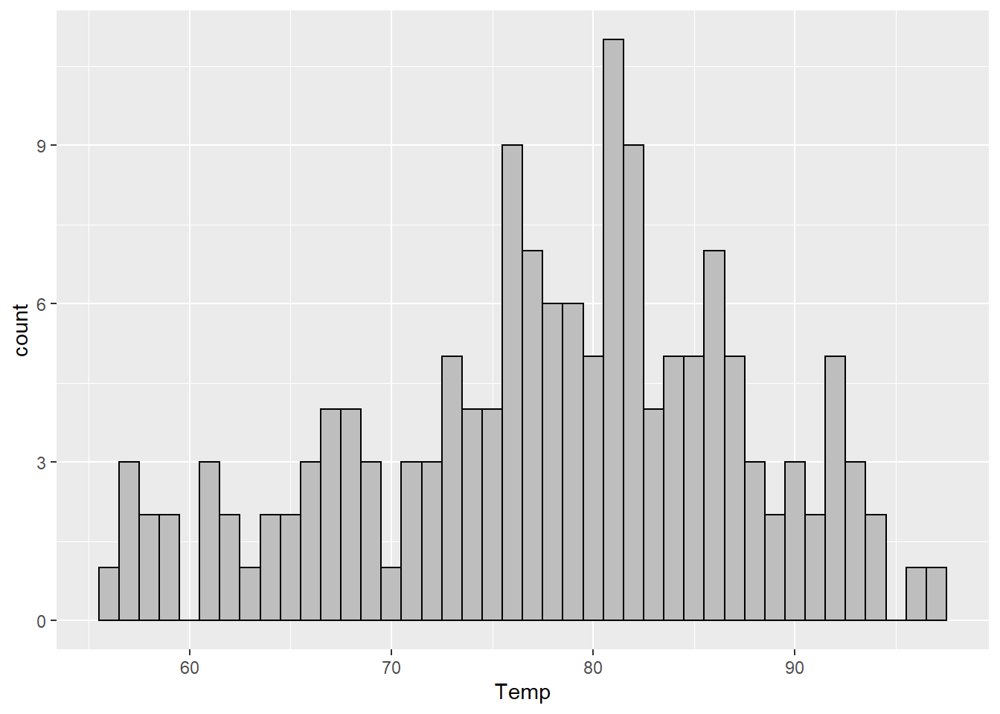
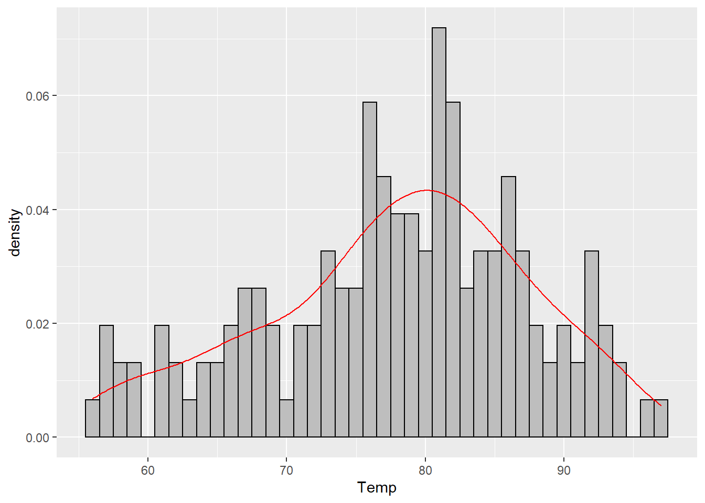
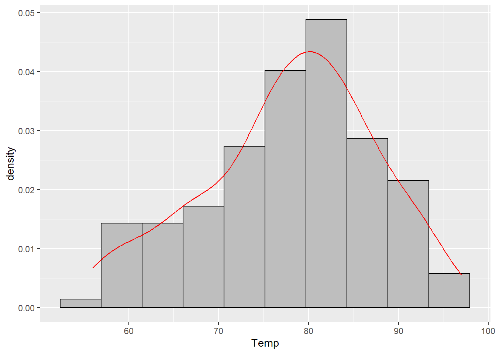
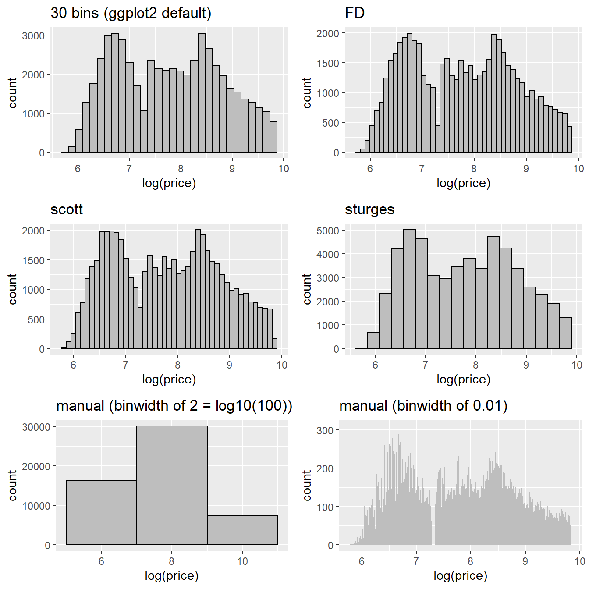

hist(airquality$Temp)

While discussing histograms in a class that I TA’d, we ending up talking about how to choose the number of bins for a histogram. This is a question that doesn’t have a definitive answer, so this is just some quick thoughts that I typed up a while ago and thought I’d share.
This is a quick explanation of histogram bin widths. Choosing the number of bins (I’ll call this \(k\) for the rest of this doc) can be difficult.
First, here’s an example of the default base R histogram.
hist(airquality$Temp)
And here’s an example of the default ggplot2 histogram. Note the warning, and how it looks completely different from the default in base R.
library(ggplot2)
ggplot(airquality) +
aes(x = Temp) +
geom_histogram()`stat_bin()` using `bins = 30`. Pick better value with `binwidth`.
This is because the default for base R is to use “Sturges’ rule”: \[k = \left\lceil \log_2 n \right\rceil + 1,\] where \(n\) is the number of observations in the dataset and the \(\lceil \cdot \rceil\) means to always round up to the nearest whole number (this is done with the function ceiling() in R). We can calculate this ourselves and then use the answer in our ggplot. I also changed the color attribute so it is easier to see how many bins there are.
There are 153 observations in the airquality dataset, so we should see 9 bins. Because ggplot doesn’t like to format hthe axis marks for histograms in the normal way (base R does), they are a bit different but there are the same number of bins in this plot as in the base R plot.
my_k <- ceiling(log2(nrow(airquality))) + 1
ggplot(airquality) +
aes(x = Temp) +
geom_histogram(bins = my_k, color = "black")
Base R also has a built in function called nclass.Sturges() that will calculate this for you.
k2 <- nclass.Sturges(airquality$Temp)
identical(my_k, k2)[1] TRUEFor ggplot2 you can either calculate this by hand, or we can use a trick to pass it into ggplot. The binwidth argument for geom_histogram() will let us use a function, but the bins argument will not, so we have to turn our number of bins into a binwidth. We can do this by dividing the range of the data (the maximum minus the minimum) by the number of bins we want. Note that the range() function does not do the subtraction automatically, but you can use either max(x) - min(x) or diff(range(x)).
sturges_bw <- function(x) { (max(x) - min(x)) / nclass.Sturges(x) }
ggplot(airquality) +
aes(x = Temp) +
geom_histogram(binwidth = sturges_bw, color = "black", fill = "gray")
The general idea is that Sturges’ rule works will for small datasets, but may not work well with a larger number of points. Luckily, there are a bunch of rules about how to choose bins, each with their own pros and cons (there is a list on the histogram wikipedia page). But R offers two others that are relatively common.
Scott’s rule is “optimal” (in a specific statistical sense) for data that are normally distributed. It will often work well if there are not a lot of outliers though.
scott_bw <- function(x) { (max(x) - min(x)) / nclass.scott(x) }
ggplot(airquality) +
aes(x = Temp) +
geom_histogram(binwidth = scott_bw, color = "black", fill = "gray")
Scott’s rule is based on the standard deviation of the data. My personal favorite histogram rule, the Freedman-Diaconis (or FD for short) rule uses the IQR instead and therefore tends to be more robust to outliers.
fd_bw <- function(x) { (max(x) - min(x)) / nclass.FD(x) }
ggplot(airquality) +
aes(x = Temp) +
geom_histogram(binwidth = fd_bw, color = "black", fill = "gray")
For small datasets, the FD choice will usually (but not always) be similar to the default choice in base R with Sturges’ rule.
As a sidenote, if you like using base R’s
hist()function, you can specify the argumentsbreaks = Scottorbreaks = FD. Otherwise you can check the documentation (?hist) for the other ways to specify this argument.
Of course there is a final choice: choose a binwidth manually that makes sense to you. And even try multiple. So for these data that I’ve been showing, we can see that the data range from about 50 to about 100. So I think that a binwidth of 5 or 10 might make sense, and is easy for me to understand. So let’s try those.
ggplot(airquality) +
aes(x = Temp) +
geom_histogram(binwidth = 5, color = "black", fill = "gray")
ggplot(airquality) +
aes(x = Temp) +
geom_histogram(binwidth = 10, color = "black", fill = "gray")
Here you can see one of the major issues with histograms: if your binwidth is too small (like the ggplot2 default of 30), the plot is hard to read. But if you choose a binwidth that is too small (like 5), the information in the data gets obscured. Our plot with a binwidth of 10 looks much closer to “no skew” than our plot with a binwidth of 5.
Since these data are integers, the most extreme example we can do would be a binwidth of 1. While this histogram is usually not the most useful, I do recommend that you at least glance at a histogram using the smallest unit of precision for your data (so e.g. if you have measurements of height that are 5.1, 3.2, etc., use a binwidth of 0.1) at least once while you’re exploring.
ggplot(airquality) +
aes(x = Temp) +
geom_histogram(binwidth = 1, color = "black", fill = "gray")
If our data are “dense” (using that term in a non-technical sense) this can give us a pretty good idea of the empirical distribution of the data.
One final alternative would be to use a density plot – this uses a specific kind of bandwidth (the continuous version of a binwidth) to plot a curve that estimates the probability (actually the density but the distinction is not that important for us right now) of each value. It works best for truly continuous data, but for dense data, this can be informative also.
ggplot(airquality) +
aes(x = Temp) +
geom_histogram(
aes(y = after_stat(density)),
binwidth = 1, color = "black", fill = "gray"
) +
geom_density(color = "red")
The red curve in that plot is the estimated density. You can plot it by itself or on top of any histogram. It does not use the bins and so will be the same regardless of what histogram you put it on top of. Like the histogram, this is just another way to try and visualize the (relative) frequency of each value in our data set.
ggplot(airquality) +
aes(x = Temp) +
geom_histogram(
aes(y = after_stat(density)),
binwidth = fd_bw, color = "black", fill = "gray"
) +
geom_density(color = "red")
Finally, let’s use a bigger data set and compare the plots. I’ll use the diamonds dataset from ggplot2 which contains about 50k diamond prices in it. To make this easy to visualize I’ll use the log of the price, but that doesn’t really matter so much as comparing the plots below.
p1 <-
ggplot(diamonds) +
aes(x = log(price)) +
geom_histogram(color = "black", fill = "gray", boundary = 0.5) +
ggtitle("30 bins (ggplot2 default)")
p2 <-
ggplot(diamonds) +
aes(x = log(price)) +
geom_histogram(binwidth = fd_bw, color = "black", fill = "gray") +
ggtitle("FD")
p3 <-
ggplot(diamonds) +
aes(x = log(price)) +
geom_histogram(binwidth = scott_bw, color = "black", fill = "gray") +
ggtitle("scott")
p4 <-
ggplot(diamonds) +
aes(x = log(price)) +
geom_histogram(binwidth = sturges_bw, color = "black", fill = "gray") +
ggtitle("sturges")
p5 <-
ggplot(diamonds) +
aes(x = log(price)) +
geom_histogram(binwidth = 2, color = "black", fill = "gray") +
ggtitle("manual (binwidth of 2 = log10(100))")
p6 <-
ggplot(diamonds) +
aes(x = log(price)) +
geom_histogram(binwidth = 0.01, fill = "gray") +
ggtitle("manual (binwidth of 0.01)")
cowplot::plot_grid(
p1, p2, p3, p4, p5, p6,
ncol = 2, nrow = 3
)`stat_bin()` using `bins = 30`. Pick better value with `binwidth`.
In general it’s easier to choose a rule than it is to pick a binwidth manually – the defaults generally (not always) choose a good middle ground for the number of bins that lets you see some local structure while also maintaining the global patterns.
Sys.time()[1] "2022-12-17 12:16:52 EST"sessionInfo()R version 4.2.2 (2022-10-31 ucrt)
Platform: x86_64-w64-mingw32/x64 (64-bit)
Running under: Windows 10 x64 (build 19044)
Matrix products: default
locale:
[1] LC_COLLATE=English_United States.utf8
[2] LC_CTYPE=English_United States.utf8
[3] LC_MONETARY=English_United States.utf8
[4] LC_NUMERIC=C
[5] LC_TIME=English_United States.utf8
attached base packages:
[1] stats graphics grDevices datasets utils methods base
other attached packages:
[1] ggplot2_3.3.6
loaded via a namespace (and not attached):
[1] pillar_1.8.1 compiler_4.2.2 tools_4.2.2 digest_0.6.30
[5] jsonlite_1.8.3 evaluate_0.17 lifecycle_1.0.3 tibble_3.1.8
[9] gtable_0.3.1 pkgconfig_2.0.3 rlang_1.0.6 cli_3.4.1
[13] yaml_2.3.6 xfun_0.34 fastmap_1.1.0 withr_2.5.0
[17] stringr_1.4.1 dplyr_1.0.10 knitr_1.40 generics_0.1.3
[21] htmlwidgets_1.5.4 vctrs_0.5.0 cowplot_1.1.1 grid_4.2.2
[25] tidyselect_1.2.0 glue_1.6.2 R6_2.5.1 fansi_1.0.3
[29] rmarkdown_2.17 farver_2.1.1 magrittr_2.0.3 scales_1.2.1
[33] htmltools_0.5.3 colorspace_2.0-3 renv_0.16.0 labeling_0.4.2
[37] utf8_1.2.2 stringi_1.7.8 munsell_0.5.0 @online{billings2022,
author = {Billings, Zane},
title = {Histogram Binwidths},
date = {2022-12-17},
url = {https://wzbillings.com/posts/2022-12-17_histogram-bins/},
langid = {en}
}